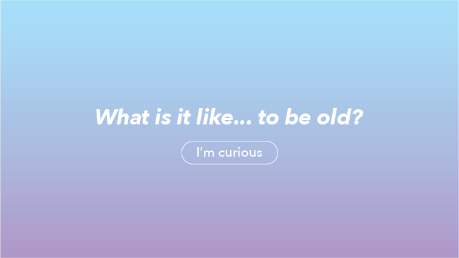
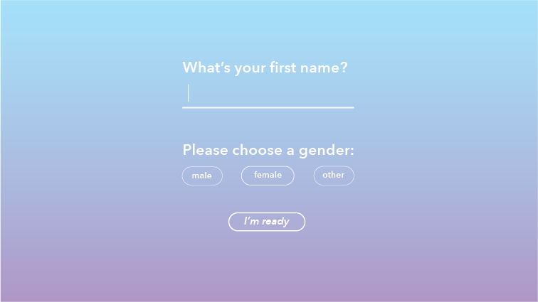
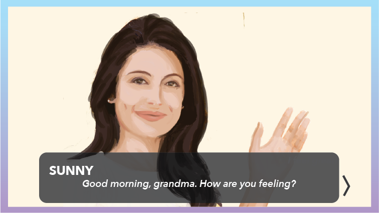
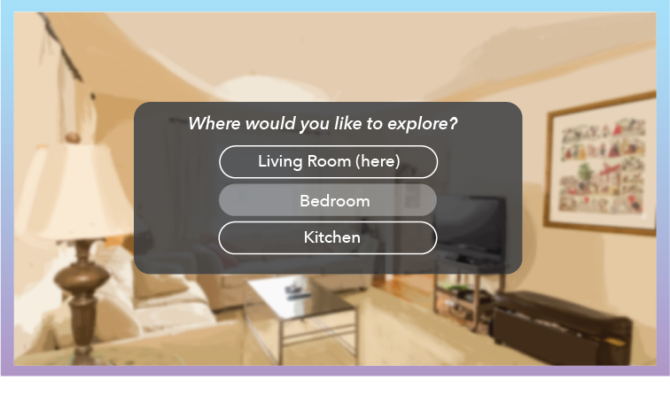
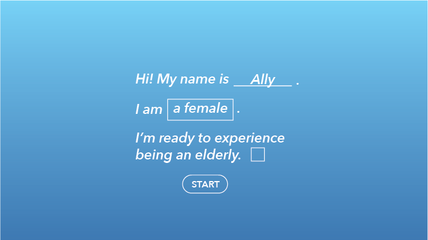
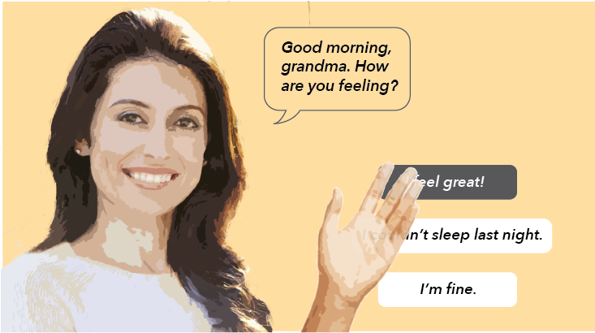

Comp 1
Comp 1 uses a blue-purple gradient that caters to the younger generation. The buttons are simple outlines, and the dialogue is on the bottom of the page. In the room exploration screen, the choices are overlayed on top of the room.




Comp 2
Comp 2 uses a calmer, blue gradient screen. The description in the intro screen is made more personal. The dialogue and choices are on the right side of the screen, while the character is on the left. On the room exploration screen, the overlay covers the entire room.

